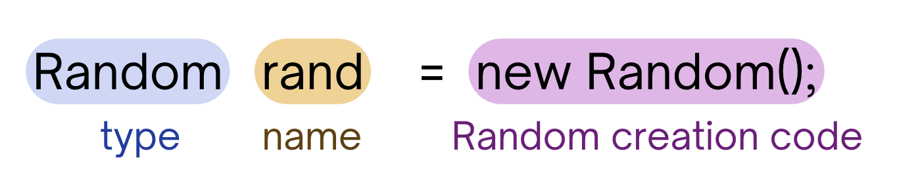

Random#
Note
Above, you’ll see there’s a video titled CSE 121: Random Video Walkthrough. The video and the reading both have the same information! You’re not required to go through both the video and the reading, as the video just walks through the reading to help contextualize it!
The concept of randomness is pretty useful in the real world! Sometimes, we want to be able to generate some random value and use it somehow. We could use random values to draw a random amount of stars, or print a message some random amount of times, etc.
There are a lot of uses for generating random values, and luckily we have a way to mimic randomness in Java—this section will discuss using Random in Java and how to use it to generate ranges of random values!
Random in Java 🎲#
As mentioned previously, Random can be used in Java to generate pseudorandom numbers.
Note
Note: Random is just like Turtles , however instead of using them to draw pictures, we use them to generate an arbitrary range of random values. Just like how we can make the Turtle do particular things (i.e. “move”) by making calls to particular methods, we can use methods on Random to generate those values.
Creating Random ✏️#
In order to use Random, we have to be able to create (or construct) it!
Caution
In order to successfully construct and use Random in our programs, make sure you have import java.util.*; at the very top of your program!

The type – just like with any variable, when you create it you want to make clear what type the variable is. We can have variables of type
Randomby making sure you list the type asRandom.The name – again, just like with any variables, we can name
Randomvariables anything we want! You’ll usually see them being named something along the lines ofrand,r, etc. but it’s up to you what you’d like to name it – as long as the name is clear, concise, and follows prescribed naming conventions.Randomcreation code – to construct or create a newRandomvariable, you must havenew Random();after the equal sign when creating aRandomvariable. This code helps ensure that we are properly constructing a newRandomvariable. Note thatnewis a keyword needed to create an instance ofRandom!
Check out the block of code! If you try to run it, we get a compiler error.
Note
Try fixing the code so that it runs properly. (answer is located in the Expand block below the code)
import java.util.*; // make sure to have this whenever you are using Random
public class Example {
public static void main(String[] args) {
// code below to create a new Random variable
// something is wrong with it! try editing it so that this
// properly creates a Random object
Random rand = Random();
}
}
Expand
Remember that in order to correctly create Random, we must have everything in the line below:
Random rand = new Random();
In the code above, we forgot the new keyword on the right side of the equal sign on line 9.
Random Methods 🧮#
Now that we know how to construct Random, we should learn how to use it to generate a random range of values!
First off, we need to learn about the different methods we can call on our Random variables:
nextInt()– when called on aRandom, this method call will give you back any randomint.nextInt(int max)– when called on aRandom, this method call will give you back any randomintin the range starting at0and ending atmax - 1. This range excludes themaxvalue that is placed in between the parentheses.As an example, if I called
nextInt(10), there is an equally likely probability that I’ll get any value starting with0and ending at9(does not include10).
nextDouble()– when called on aRandom, this method call will give you back any randomdoublebetween0.0and1.0(exclusive).
Run the code below to see how we can use these methods:
Note
Try running the code block multiple times to see how these values change!
import java.util.*; // make sure to have this whenever you are using Random
public class Example {
public static void main(String[] args) {
// code below to create a new Random variable
Random rand = new Random();
// generating a random value as an int
int randInt = rand.nextInt();
System.out.println("value from call to nextInt(): " + randInt);
// generating a random value as an int between 0 and 10 (exclusive)
int randIntRange = rand.nextInt(10);
System.out.println("value from call to nextInt(10): " + randIntRange);
// generating a random value as a double
double randDouble = rand.nextDouble();
System.out.println("value from call to nextDouble(): " + randDouble);
}
}
Generating an Arbitrary Range of Values 📚#
Notice that when calling nextInt(int max), we get a range that will always start at 0 (called zero-inclusive) and will end right just before max (called max-exclusive).
But what if we want to generate a random value from a range that starts at 1 and ends exactly at max? Or what if I wanted a range that starts at 5 and ends at 15?
We can generate any random range of values we want using a call to nextInt(int max) and manipulating these values slightly.
For example, to get a random number from 1 to max inclusive, all we have to do is add 1 to the call to nextInt() and this will shift the range of random values ranging between 0 and max - 1 to between 1 and max:
// generating a value in the range of 1 to max
int num = rand.nextInt(max) + 1;
If you wanted to generate a value in any range where you know the minimum (min) value and the maximum (max) value, you can use the following template:
// generating a value in the range of min to max
int num = rand.nextInt(range) + min; // where range = max - min + 1
Another example, to get a random integer in the range of 4 to 10 inclusive:
// min = 4
// max = 10
// range = max - min + 1 = 10 - 4 + 1 = 7
int num = rand.nextInt(7) + 4;
Main Points:#
In Java, the
Randomclass is used to generate pseudorandom numbers.To use
Random,import java.util.*and create a new instance ofRandomwith the syntaxRandom rand = new Random();.The
Randomclass has methods likenextInt()(returns any randomint),nextInt(int max)(returns a randomintin the range 0 tomax-1), andnextDouble()(returns any random double between0.0and1.0exclusive).To generate an arbitrary range of values starting from
mintomax, use the formulaint num = rand.nextInt(range) + min;, whererange = max - min + 1.